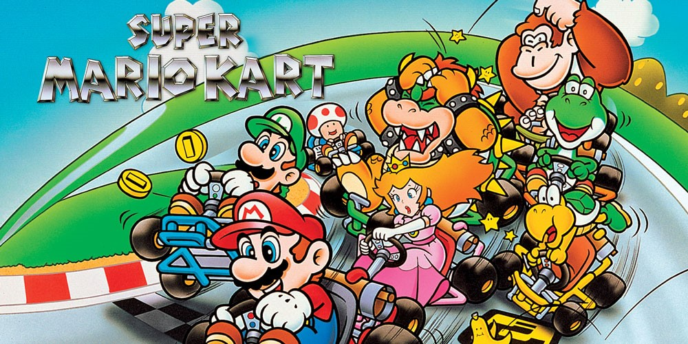

- 1992, Super Mario Kart op SNES
- 1996, Mario Kart 64 op Nintendo 64
- 2001, Mario Kart: Super Circuit op Game Boy Advance
- 2003, Mario Kart: Double Dash op Nintendo GameCube
- 2005, Mario Kart DS op Nintendo DS
- 2008, Mario Kart Wii op Nintendo Wii
- 2011, Mario Kart 7 op Nintendo 3DS
- 2014, Mario Kart 8 op Nintendo Wii U
- 2017, Mario Kart 8 Deluxe op Nintendo Switch
- 2020, Mario Kart Live: Home Circuit op Nintendo Switch
